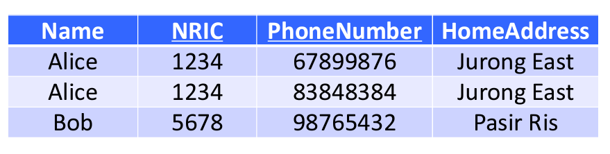

SC2207: Intro to Databases
Mid-term Quiz Sample Questions
1. A relation schema has . Which normal form is this in?
1NF. The only candidate key is , but there are partial dependencies on and .
2. A many-to-one relationship exists between two entity sets, and . Which of the following statement(s) is/are true?
- 🟢 Key of R Key of S
- Key of S Key of R
- 🟢 Key of R attributes of S
- Key of S attributes of R
Assuming we have many R to one S. Then, (3) is true, as the key of R is equal to the key of S, and the key of S is a key, which mean it determines all attributes of S. Since (3) is true, (1) is trivially true, since the key of S is an attribute of S.
While the key of S “determines†the key of R in the sense that if one of S’s keys is updated, then all entries in R with the same key must be updated, it does not determine the key of R in the sense of functional dependencies.
3. Given a set of FDs , which of the following is/are minimal basis?
- — is not minimal.
- 🟢
- — this is not minimal, , which makes reducible to .
- — is not true
Minimizing one possible basis by removing two redundant determinants, we get: .
4. Which of the following is true of a relation schema , where is a key attribute of another entity set and is not a key attribute of any entity set?
- In the ER diagram, must be an entity set — Not necessarily, it could be a M2M relationship where is a key of another entity set.
- In the ER diagram, must be involved in a relationship with another entity set whose key is — obviously not this one, since is not a key attribute of anything.
- 🟢 In the ER diagram, must be involved in a relationship with another entity set whose key is
- In the ER diagram, must be involved in a relationship with another entity set whose key is — Not necessarily, can be part of the PK of in a many-to-one.
Questions to Revise
- Denotes official correct answer
🔴 Denotes answers that I may get/have got wrong due to conceptual flaws.
What does a rectangle in an ER diagram represent?
- A. 🔴 An entity.
- B. A person or object in the real world.
- C. 🔴 A set of entities.
- D. Data about an entity.
[ER Diagram Checkpoint 1]
Flaw:
- A. refers to one single row/record/tuple in an entity set
You can use a referential integraity constraint in a M2M relationship
- 🔴 True
- False
[ER Diagram Checkpoint 2]
Flaw:
- The referential integrity constraint only include the sharp and rounded arrows. Degree constraints (like ) are not considered referential integrity constraints.
Given a table , if is in BCNF, has the following good properties
- A. T has no update or delete anomalies
- B. T has very small redundancy
- C. 🔴 T can be reconstructed from the decomposed tables
- D. T only has non-trivial FDs
[BCNF Checkpoint 2]
Flaw:
- C. While BCNF decomposition does not preserve FDs, it does not affect the reconstructability of tables. All BCNF (and 3NF) decompositions always has lossless join.
Given table , where are sets of attributes from where has more attributes than , if such that does not contain all the attributes of , we can conclude that:
- A. 🔴 is not in BCNF
- B. is not a key in
- C. is a non-trivial FD in
- D. is part of a key in
[BCNF Learning Checkpoint 2]
Flaw:
- A. is inferrable because if , is not the entire set of attributes, then any superkey that includes attributes in must also include attributes in that are not contained within . This means that is not a superkey, and is a partial dependency, which violates 2NF, which violates BCNF.
“English Exam†questions
In learning checkpoints, these are the questions that don’t make sense/have ambiguous interpretations/bad grammar.
The prof is always correct, so memorize these.
- denotes the official correct answer
🟢 denotes that this particular choice of answer is (mostly) sensible
❓❗ denotes that the answer is the opposite of what is expected, due to bad or misleading phrasing.
A key in an entity set may only have one attribute
- True ❓❗
- False ❓❗
[ER Diagram Checkpoint 2]
Reason: This question uses the term may in the sense that it could have, but not necessarily have. May only have can also be interpreted as a polite way of saying “should/must only have”. The correct answer is True because it could have one attribute.
Correct phrasing of question: A key in an entity set can only have one attribute
When mapping ER diagram to relational schema, a M2M relationship becomes:
- A. Relation
- B. 🔴 Relational Schema
- C. Table
- D. 🔴 All of the above
[ER Diagram Checkpoint 3]
Reason: The canonically accepted definition of a relational schema is the set, attribute types, and metadata of all relations in a database that pertain to logical implementation. However, in this question, the answer selection “B. relational schema†has the intended meaning of “a part of the relational schema”, rather than the entirety of the relational schema. This question has the philosophical and linguistical paradox/ambiguity of the Ship of Theseus.
Corrected intended phrasing of option B:
- B. Part of the relational schema
We use subclasses in ER diagrams when
- A. 🔴 A subclass has attribute(s) that is/are absent from the superclass
- B. A subclass has its own relationship with some other entity sets
- C. We need a stronger supporting entity set
- D. All of the above
[ER Diagram Checkpoint 3]
Reason: “A subclass has attributes that are absent from the superclass†is a statement of fact, and is one possible reason for using a subclass amongst two. However, this question uses the quantifier word when, which makes it seem that this question is asking for a sufficient condition, rather than a necessary condition, incorrectly implying that the reader picks the more sufficient condition.
In English, the sentence structure “X when Y†is equivalent to “When Y, then X”, which is equivalent to “If Y, then X”, meaning in first order logic. Instead, this question intended to ask the converse: , i.e., “X because Y”, which will ask for the reader to list down all reasons (conjugated with boolean AND) that necessitates the use of subclasses.
Corrected intended phrasing of question: We use subclasses in ER diagrams because…
If a relational schema is not properly formulated, the following anomalies may occur
- A. Certain attributes may have duplicate values in the table ❓❗
- B. Certain attributes may be duplicated in the table 🟢
- C. Certain rows in the table may be duplicates 🟢
- D. Certain rows and columns in the table may be duplicates ❓❗
[Functional Dependency Checkpoint 1]
Reason:
- A. It is not fundamentally wrong to have duplicate values in a table, as long as the duplicate values are not the entire candidate key. Yet, one possible reason for anomalies may, could, perchance, perhaps be due to duplicate values that should have been unique.
- B. Consistent with the previous question, if this happens it breaks 1NF, so it cannot be called a table.
- C. Same reason as B.
- D. What does rows and columns being duplicates even mean???
“Why†do anomalies occur in tables?
- A. There is a bad combination of attributes. 🟢
- B. Certain attributes may appear more than once. ❓❗
- C. There is one or more relationships among attributes. ❓❗
- D. There are functional dependencies among attributes. ❓❗
[Functional Dependency Checkpoint 1]
Reason:
This question intends to ask: “What are possible reasons for anomalies in tables?”, i.e., they are asking for necessary conditions, and not sufficient conditions, unlike implied by the phrasing of this question.
- A. is both a necessary and sufficient condition for anomalies — no ambiguity.
- B. Having attributes appearing more than once will definitely cause anomalies, but it breaks the principles of 1NF, meaning that if this rule was broken, it cannot even be considered a relation/table, thus it is not a reason why anomalies occur in tables.
- C. Having one or more relationships among attributes is not a sufficient condition for anomalies, but it is a necessary condition, and thus is a possible reason for anomalies. If two attributes are unrelated, then they do not have to be consistent with each other, and there are no FDs between them, so anomalies cannot occur.
- D. FDs are equivalent to relationships, e.g. can be taken to mean Many is to One , so this is true for the same reason C. is true.
T/F: A key is a set of attributes in a table that decides some other attributes
Answer: False ❓❗
[Functional Dependency Checkpoint 2]
Reason: A key is a set of attributes in a table that decides all other attributes
T/F: A table R is in BCNF if and only if the LHS of every FD is a superkey
Answer: False ❓❗
[BCNF Checkpoint 1]
Reason: A table R is in BCNF if and only if the LHS of every non-trivial FD is a superkey, and
T/F: In 1NF, some attributes have atomic values.
Answer: False ❓❗
[3NF Checkpoint 1]
Reason: In 1NF, all attributes have atomic values.
T/F: In a table that satisfies 3NF, key-attributes are determined only by candidate keys
Answer: False ❓❗
[3NF Checkpoint 1]
Reason: The condition for 3NF is that the table must be in 2NF, AND, key-attributes are determined only by candidate keys.
T/F: In a minimal basis, we only require the right-hand side of some FDs to have only one attribute.
Answer: True ❓❗
Reason: In the phrase “we only require the RHS of some…”, this quantifier implies that this is the sole necessary condition for a minimal basis, which is not true.
However, the word “only†prefixing a relative clause in English does not have solvable nor definite context.
Grammatically speaking, these are all valid interpretations of this sentence:
-
In a minimal basis, we require only(the RHS) of some FDs to have only(one attribute)
- Means: For a minimal basis, only the RHS, as opposed to both the LHS and RHS, is required to have only one attribute.
-
In a minimal basis, we require only(the RHS of some FDs) to have only(one attribute)
- Means: For a minimal basis, only the RHS of some FDs, as opposed to the RHS of all FDs, is required to have only one attribute.
-
In a minimal basis, we only(require the RHS of some FDs to have only(one attribute))
- Means: The RHS of some FDs having one and only one attribute is a necessary condition for a minimal basis, as opposed to other conditions also being necessary.
-
In a minimal basis only we(require the RHS of some FDs to have only(one attribute))
- Means: For a minimal basis, only we, as opposed to Alice, Bob, Tom, Dick, or Harry, require the RHS of some FDs to have only one attribute.
This question’s intended meaning is (3.) which is better phrased as:
- For a minimal basis, the only requirement is that the right-hand side of some FDs has only one attribute.
The use of the relative clause marker “is that†or “that†in English is an important feature in grammatical syntax. Dependent clause markers (i.e., delimiters) in formal language theory and linguistics provide necessary information which tells the listener how to parse the depth and position of relative clauses and quantifiers in the Abstract Syntax Tree.
0. Preliminary Definitions
Database
A database is data organized to optimize retrieval and storage by a computer. Not to be confused with a DBMS, which is a particular software implementation of a database.
Database Management System
A DBMS is a software that interacts with the user, applications, and the database itself to capture and analyze data. A general-purpose DBMS is designed to allow the definition, creation, querying, update, and administration of databases.
Entity / Record / Tuple / Row
One single entry representing one logical object inside an Entity Set. Do not confuse with entity sets.
Entity Set
A collection of entities of the same type.
Attribute / Field / Column
A property of an entity set.
Relation / Table / SQL Table
Represents a single logical table in a database. The collection of all relations is called the Relational Schema.
A relation/table can come from Entity Sets, Relationships, or as the result of normalizing a table that is not in desirable normal form.
1. Entity Relationship Diagrams
ERD Keys
- Every Entity Set/Table/Rectangle must have at least one key which uniquely identifies a record
- Keys are denoted by an underline
- Compound keys/multiple underlines mean the unique combination of the keys is the identifier.
ERD Relationships: Referential Integrity Constraints
- “Capital of†is the name of the relationship. Relationships are diamonds/parallelograms.
- Rounded arrow on the Entity Set means there must be one and only one of it in the relation.
- Sharp arrow on the Entity Set means there is at most one of it in the relation.

- This means A Country must have one and only one capital City, and a City can be the capital of at most one Country, or not at all.
Degree Constraints
- ≥1 means each company must hire at least one person
- Rounded arrow means each person must be hired by one and only one company.
- Other degree constraints can be used.
The ≥1 sign/degree constraint is on the OPPOSITE SIDE of which Entity Set it applies to!
E.g., ≥1 on the Companies side means that there are ≥1 Persons hired in a company.
ERD Subclass:
- The ‘isa’ triangle points towards the superclass.
- Each subclass needs its own ‘isa’ triangle.
Weak Entity Sets

- A weak entity set (double rectangle) cannot be uniquely identified by its own attributes. E.g., there are multiple
Citiescalled “Singapore†in the world - They must be attached to a strong entity set via a supporting relationship (double diamond)
- In implementation, the compound key of the strong and weak entity sets combined will be the unique identifier of the weak entity set.
Relational Schema
We convert Entity Sets and Relationships in an ERD into Relations (aka Tables) in a database.
The set of relations/logical tables in a database is called the Relational Schema, aka Schema.
Trivially, each Entity Set becomes a Relation.
However, in M2M relationships, the relationship itself has an intermediate table, contributing an extra relation.
Additional relations/tables may be created in the normalization process.
Converting Many-to-Many Relationships into Relations
If A-M2M-B,
- We create 3 tables, A, B, and R, for the relationship. This way, 1A : Many R, and 1B : Many R.
- R will have foreign keys to A and B and the compound of these two keys is the primary key of R.
Converting subclass relationships into Relations
There are 3 ways to do this in the slides (why???), but the ER model is preferred.
Standard Entity Relation (ER) Model
- We create a Relation/Table for each subclass, containing only attributes unique to the subclass, and a foreign key referencing the superclass ID.
- We create a Relation for the superclass, containing all attributes that are general over all subclasses.
Object-Oriented (OO) Model
- Create one table per combination of superclass and subclasses. E.g. if B, C are subclasses of A, then we have to create:
- A
- B
- C
- B-C
- Entities are mutually exclusive between the above tables and only appears once.
- E.g., if an entity is in B, it “is a†B, and also “is a†A
- If an entity is in A, then it is only an A
Single Table/NULL Approach
- Put all attributes of all subclasses into one Relation, and have NULLs for N/A attributes.
Converting Weak Entity Sets into Relations
- A weak entity set will have (an) additional attribute(s) referencing the primary key of the strong supporting entity.
2. Functional Dependencies
Data Anomalies
Consider the table with the compound primary key (NRIC, PhoneNumber)

The above example table is “bad†as there are functional dependencies that are not captured in the primary key. This causes the following data anomalies:
Redundancy
“Jurong East†duplicated across multiple records within a table
Update Anomaly
We can change Alice’s address in the 1st record but not the 2nd, leading to inconsistencies.
Insertion Anomaly
We want to insert a new person without a phone number, but cannot because the phone number is part of the primary key. Inserting the same person with a different phone number at a different address is also allowed, which may not be desirable depending on the specs.
Deletion Anomaly
If Bob stops using a phone, we cannot remove Bob’s phone number, because it is in the primary key of the table.
A deletion anomaly can also refer to the event where information gets lost forever when the last record with that information is deleted, which happens when a table has attributes that should have been in a separate table. E.g., consider a table with information about bank branches stored only within a table that also stores bank account records. If the last account for a branch is closed, then the branch information like address and phone number is lost forever.
Functional Dependencies: Formal Definition
A functional dependency is written as:
and is read as:
- “ functionally determines ”
- “The values of determine the values of ”
- “ depends on ”
For the purposes of this document, refers to the set of all functional dependencies in the relation .
Meaning:
- The values of can determine the values of
- Equivalently, there do not exist two records with the same , but different
- Equivalently, is a (surjective) function of , i.e., such that , but is not injective since different can map to the same .
- This property can also be vacuously true (i.e., the table is empty, then all functional dependencies will hold by default)
Formally, the functional dependency relation is a binary relation whose two arguments are sets of attributes. The sets are not ordered, and the operator is not commutative, so:
Determinant set
The determinant set is the attributes on the left-hand side of , that determines the attributes on the right-hand side.
Dependent set
The dependent set is the attributes on the right-hand side of , that depend on the attributes on the left-hand side.
Armstrong’s Axioms
Axiom of Reflexivity (aka Trivial Functional Dependencies)
A set of attributes determines (a subset of) itself.
Any functional dependency that is reflexive is called a trivial functional dependency.
Axiom of Augmentation
Axiom of Transitivity
Intuitive Diagram for Proving Functional Dependencies
Minimal basis of functional dependencies
Given any set of functional dependencies , we can find a minimal basis that is equivalent to . We draw analogy to as a spanning set of a vector space, and as basis vectors of the vector space, which is a minimal spanning set.
Three conditions that determine whether is minimal:
- , the dependent set (RHS) has only one attribute.
- , the determinant set (LHS) is minimal. I.e., no attribute can be removed from the determinant set without changing the meaning of the functional dependency.
- , no should be derivable via Armstrong’s Axioms from
Example: given a set of FDs:
First, we split multi-attribute dependent sets into single-attribute dependent sets:
Already, we see that the determinant of does not have a minimal determinant. Since , we can remove from the determinant since it is already determined by .
Warning
In , we have deemed as unnecessary. Note that we cannot remove from the determinant! Though it seems like it, is not true. The mapping can be non-injective (the same can be mapped to different ), thus alone cannot uniquely determine despite functionally determining . Notice that the closure is trivial, meaning that, on its own, it cannot determine any other values other than itself.
Tip
This step may look like hand waving. More formally, we look at the closures of the determinant sets. Notice that , but if we remove from the determinant, notice that anyways, since and is defined, hence, in ,
Now we see that and are redundant, since by transitivity, already implies those FDs:
Finally, notice that is redundant, since we already have , the closure of . This gives the minimal basis:
All three conditions for a minimal basis are satisfied.
We can manually verify that this is a minimal basis by checking the closures of every attribute in the relation are equal no matter whether we use or :
Notice that a minimal basis is not unique.
Closure of a Set of Attributes
Let be a set of attributes, and let the functional dependencies be:
The closure of is denoted as , i.e., , and is the set of all attributes that can be determined by . Using , we have:
Formal Keys
Here are formal definition of special classes of keys in database theory (not to be confused with keys in SQL)
Let be the set of all attributes in relation . Let be an improper subset of the attributes.
Superkey
If , then is a superkey of .
Then, , i.e., can determine all other attributes in the relation.
Trivial Superkey
If some superkey is equal to the entire set of attributes in a relation, then it is called a trivial superkey. All tables in 1NF must have a trivial superkey to avoid repetition of records.
Candidate key (aka just “Key”)
Let be a superkey such that:
Then this is a candidate key of , also known as a minimal superkey, or just a possible key of the table.
There can be more than one candidate key, and they can be of varying sizes.
Key-Attribute (Primary Attribute of a Candidate Key)
Note on nomenclature
The term Key-Attribute is used in the lecture notes, but the more canonical term found online and in use worldwide is Prime/Primary Attribute. For the purposes of this document, we will use the term Prime/Primary Attribute.
Misleading slide
In the slides, it states that a key-attribute is part of a multi-attribute key. While this is correct, it can be misinterpreted as a key-attribute not being the entire key in a unitary/simple key. This is not true, as a key-attribute/prime-attribute is any attribute that belongs to any candidate key, whether simple/unitary or compound.
A primary attribute is any attribute that is contained in one or more candidate key.
As a corollary, any primary attribute will be in the determinant set of at least one functional dependency in , if and only if is non-empty (equivalently, the trivial superkey is NOT a candidate key). This is true as a candidate key is a minimal superkey, and a superkey should be able to determine all other attributes. If primary attribute , then it must be in the left-hand side of some
However, the converse is not true: a non-prime attribute may be in the determinant set of some functional dependency. Consider
which are the FDs of a table in 2NF. Here, is the only candidate key, and is a non-prime attribute, but it is the determinant of .
Not the same meaning as SQL’s primary key
This is not to be confused with the notion of a primary key in SQL, which is a candidate key that is (arbitrarily) chosen to be the “main†key, amongst other valid candidate keys.
2.5. Additional Formalisms
Just a list of terms on the internet.
Attribute Domain
The set of all possible values for an attribute. More informally, the type of the attribute (string, char, int, datetime, etc.)
What is the point of formalisms?
Functional dependencies are used as the axiomatic a priori basis for constructing tables and deciding keys of a table.
Having only one assumable/external aspect provides a rigorous and consistent method, at the expense the need for much formal logic and deductive reasoning.
3–4. Normal Forms
Intuitive definitions
-
1NF: Basic rules of a table/relation
-
2NF: No partial dependencies — All non-prime attributes (attributes not in any candidate key) should not be dependent on an incomplete part of a candidate key. However, non-prime attributes depending on other non-prime attributes is allowed.
-
3NF: No transitivity — All non-prime attributes should depend on every candidate key, and no partial dependencies.
-
BCNF (3.5NF): No partial-key transitivity — Every attribute, prime or non-prime, should depend on the entirety of every candidate key.
First Normal Form (1NF): Specification of a Relation
- No attribute domain has relations as elements. I.e., no table column can have a table as values.
- An attribute domain does not change depending on the record (e.g., one column should always have the same type)
- There are no repeated attributes
- Invariant under sorting (both rows/records and columns/attributes are unordered tuples)
- Between each record, any candidate key is a minimal superkey, can uniquely determine a record, and is not null. Other attributes need not be unique.
Second Normal Form (2NF): No partial dependency
Includes all rules in 1NF, and:
- Non-prime attributes should not be a partial dependency — i.e., depends on part of a candidate key, but not all of it.
- Equivalently, for every possible choice of primary key , every attribute not in any , i.e., should be functionally dependent on the entire primary key.
This definition is motivated by the prevention of obvious sub-relations inside a relation. If and , then there should just be a separate relation/table for , since is not affected by .
Example of violating 2NF
Consider a table StudentCourses(student_id, course_no, course_fee):
| student_id | course_no | course_fee |
|---|---|---|
| 1 | CS101 | 1000 |
| 1 | CS201 | 1500 |
| 2 | CS101 | 1000 |
| 3 | CS301 | 2000 |
Assume that the course fee determined by the course taken, and that one student can take multiple courses.
We have the set of functional dependencies:
However, notice that course_no on its own is not sufficient to uniquely identify a record, and neither is student_id alone. We need the compound key (student_id, course_no) to uniquely identify a record because one student can take multiple courses.
Thus, the only candidate key for StudentCourses is , and the functional dependency violates 2NF.
From this example, we see how 2NF’s main goal is to prevent repetition of data caused by partial dependencies which will cause redundancy, update, insertion, and deletion anomalies
Third Normal Form (3NF): No transitive dependency in non-prime attributes
Includes all rules of 2NF, and there are no non-prime attributes which are transitively dependent (see Axiom of Transitivity) on a candidate key.
Formally, for all functional dependencies
- is trivial, i.e.,
- is a superkey
- And/Or, every attribute in the set difference is a prime attribute part of some candidate key.
- We don’t check attributes that are in the dependent and determinant sets, since those are trivial.
Proof: 3NF implies no transitive dependency
We prove this by the contrapositive: Transitive dependency violation of 3NF.
Any transitive chain/subgraph of FDs can be simplified into the form by noting that:
- any intermediate multi-element dependent set in the transitivity can be broken up into multiple FDs with single-valued dependent sets, creating multiple chains of transitive FDs
- A multi-element determinant set can only act as an intermediate link in the chain if and only if all members are dependent on the same set of attributes, since it can only be considered transitive if and only if all determining attributes are contained within the closure of all possible choices of candidate keys .
Thus, W.L.O.G., we suppose a relation where and the sole candidate key such that is a non-prime attribute transitively dependent on via .
Given this configuration of , notice that if the candidate key were to be instead, then breaks 2NF, because it is a partial dependency on only half of the candidate key. The same can be said for all .
Thus, given such an , either (1.) or (2.) all attributes.
-
If , then is transitively dependent via the chain .
- is not a trivial functional dependency.
- is not a superkey.
- is not a prime attribute of any candidate key.
- Hence, we show that in this case where is transitively dependent, it violates 3NF.
-
If , then is trivially dependent on , and thus not transitively dependent and can neither prove nor disprove 3NF.
Hence, for all cases where is transitively dependent, it violates 3NF.
How to decompose to 3NF
- Convert FDs to a minimal basis
- Combine FDs in with the same determinant set:
- E.g.,
- For each FD left, create a table that contains all attributes in the FD (both determinant and dependent attributes).
- Remove redundant tables
- If necessary, add a table containing one candidate key of the original table. This step ensures the lossless join — the original table is reconstructable from the decomposed tables.
Example:
Notice that this table has key such that and
is already a minimal basis. We proceed to step 3. For each FD, we create a table.
However, we want lossless join (we can reconstruct every record in the original table from deconstructed tables), we need to reintroduce a table to collate the original records, because now the relation that records and , the prime attributes, is lost. Thus, we add a new table:
Thus completes the decomposition into 3 tables.
Example of violating 3NF
Consider a table Student(student_id, name, state, country)
| student_id | name | address | country |
|---|---|---|---|
| 1 | Alice | S544653 | SG |
| 2 | Bob | PD N9 61800 | MY |
| 3 | Charlie | 2067 G Jln Utama Kuching | MY |
The only possible candidate key is:
Assume that values for address are unique worldwide, and can solely determine the country, but siblings/students can share the same address.
We have the set of functional dependencies:
This is in 2NF, but intuitively breaks 3NF, because means country transitively dependent on the primary key.
Formally, we see in the non-trivial functional dependency that address is not a superkey, and country is not a prime attribute. Thus, this violates 3NF.
Anomalies in 3NF-violating table
In the above example, we see that there is no guaranteed consistency between the address and the country, which causes update and insertion anomalies. There is also redundancy in the country column in the case where multiple students share the same address.
In the event where it is important to keep a log of which address belongs in which country, even after a student record is deleted or relocates, we also see a deletion anomaly between the country and address columns.
Achievability of 3NF
3NF is the highest normal form that is always achievable, unlike BCNF
Boyce-Codd Normal Form (BCNF/3.5NF): No transitive dependencies at all
All rules of 2NF, plus the rule that every determinant (i.e., left-hand side of any FD) must be a superkey.
Equivalently, same as 3NF, but omitting the leniency that for all non-trivial FDs, the determinant LHS may not be a superkey if it is a prime attribute.
Given a relation with set of attributes , and a set of functional dependencies , the relation is in BCNF if it is in 3NF and:
Where is the closure of under .
BCNF prevents, intuitively, “split tables”, i.e., tables that can be further decomposed to prevent anomalies.
BCNF Pros and Cons
Pros
- No update anomalies
- No deletion anomalies
- Minimal redundancy
- Lossless Join Property — The original table can always be reconstructed from BCNF decomposed tables.
Cons
- Decomposing a table into BCNF may not preserve FDs
- This doesn’t affect lossless join, since the original table can still be reconstructed, just with FDs missing.
Example of violating BCNF
Consider a table StudentRegistration(id, course, course_code) where each record is one course that a student has registered for.
id: Student IDcourse: Name of course takencourse_code: Course code of course taken
| id | course | course_code |
|---|---|---|
| 1 | CS101 | 101 |
| 1 | CS201 | 201 |
| 2 | EE101 | 301 |
| 2 | CS301 | 301 |
There are two possible candidate keys , and that can uniquely determine each record.
We have the set of functional dependencies:
both course_code and course are individually not superkeys, but they are both prime attributes of and respectively, hence this table is in 3NF but violates BCNF.
Anomalies in BCNF-violating table
In the above example, we see how there is no guaranteed consistency between course and course_code despite the functional dependencies implying they should be a bijection (one-to-one and surjective/onto). This causes:
- Redundancy in the
courseandcourse_codecolumns whenever a new student signs up for the same course - Update and insertion anomalies occur when a course is renamed or renumbered, and the change is not reflected in all records
- Deletion anomalies occurs when the last student taking a course is removed, then the course code and course name are lost forever.
BCNF Decomposition Example
Define a relation , with FDs:
We have the candidate key: .
The determinant of is , which is not a superkey, so we can decompose using the closure of the determinant: .
To decompose:
- — all attributes in the closure of the determinant of the violating FD
- — all attributes in the original relation that are not in , plus the determinant of the violating FD.
We see that is in BCNF, since is the only FD applicable to it.
However, is not immediately applicable , since is not in it. We use closures of subsets of to find more equivalent FDs implied by .
We can find that . Thus, is also equivalent to:
Notice that shows that is not in BCNF, because is not a superkey for . We decompose again using the closure of the offending determinant :
- — attributes in the closure of the offending determinant
- — attributes not in , plus the offending determinant.
The only candidate key of is , thus it is in BCNF. are trivially dependent on the entire candidate key, and is also dependent on , thus it is in BCNF.
The only candidate key of is . Every attribute is trivially dependent on the entire candidate key, so it is in BCNF.
Hence, the decomposition and the new functional dependencies per-table are as follows:
To check whether this decomposition preserves FDs, we need to show that every original FD in is recoverable from the FDs in the decomposed tables. We can do this by computing the closure of the determinant set of the original FDs.
- is trivially recoverable from
- is not recoverable:
- In the decomposed tables, the closure of BC does not include
Hence, the decomposition does not preserve the FD .
BCNF may not be achievable
Normalizing a non-BCNF 3NF table to BCNF may not preserve all FDs.
Consider
With candidate keys:
This set of functional dependencies is the smallest example of a 3NF relation that is not in BCNF.
For example. Consider a table NearestShops(person, shop_type, nearest_shop) that denotes the nearest shop, per specific shop type, to a unique person.
| person | shop_type | nearest_shop |
|---|---|---|
| Alice | Grocery | NTUC |
| Alice | Pharmacy | Guardian |
| Bob | Grocery | Sheng Siong |
| Bob | Pharmacy | Watsons |
Notice that , but also .
Thus the two candidate keys are (person, shop_type) and (person, nearest_shop), and the table is in 3NF but not in BCNF. Unlike the previous example, notice that in the offending columns, shop_type and nearest_shop is not a bijection, which makes it impossible to decompose the table into two tables that are in BCNF:
If we try to decompose the table:
To have one table relating person and nearest_shop, and another relating nearest_shop and shop_type, we will have two BCNF tables, but the whole point of the original table was to relate person to nearest_shop per shop_type. This means we have destroyed the original FD:
Mutually Exclusive Candidate Keys in 3NF BCNF
If all candidate keys of a 3NF table are mutually exclusive, then the table is in BCNF.
Proof: Suppose a 3NF table with candidate keys such that .
From 3NF, we know that all non-trivial either (1) have as a superkey, or (2) all attributes in are prime attributes of some candidate key.
- is a superkey, no problem with BCNF.
- If is a prime attribute of , we have that , otherwise this would be a trivial FD.
- By definition of a key, , every key determines all other attributes.
Is there even a proof for this?
Lossless Join Property
When decomposing a relation into multiple relations , the decomposition has the lossless join property if and only if:
Where denotes the natural join operator — a binary, commutative & associative operation that joins two tables based on their common attributes, such that common attributes only appear once.
That is, given original table T and deconstructed tables T1 and T2, the original table can be reconstructed through:
SELECT * FROM T1 NATURAL JOIN T2
or
SELECT * FROM T1 INNER JOIN T2 ON T1.common_attr = T2.common_attr
Here is an example of a decomposition that does not have the lossless join property:
Consider a table StudentCourses(student_id, course_no, course_fee).
If we were to (nonsensically) decompose this table into:
Student(student_id)with- key:
- FDs: ; and
Course(course_no, course_fee)with- key:
- FDs:
then the join of these two tables would not be lossless, because the original table cannot be reconstructed from the join of these two tables as the attribute student_id is not present in the relation Course, so we can no longer relate a Student to their respective Courses.
If we were to perform 3NF normalization but skip the last step (adding necessary tables to ensure lossless join), then such a decomposition would not have the lossless join property.